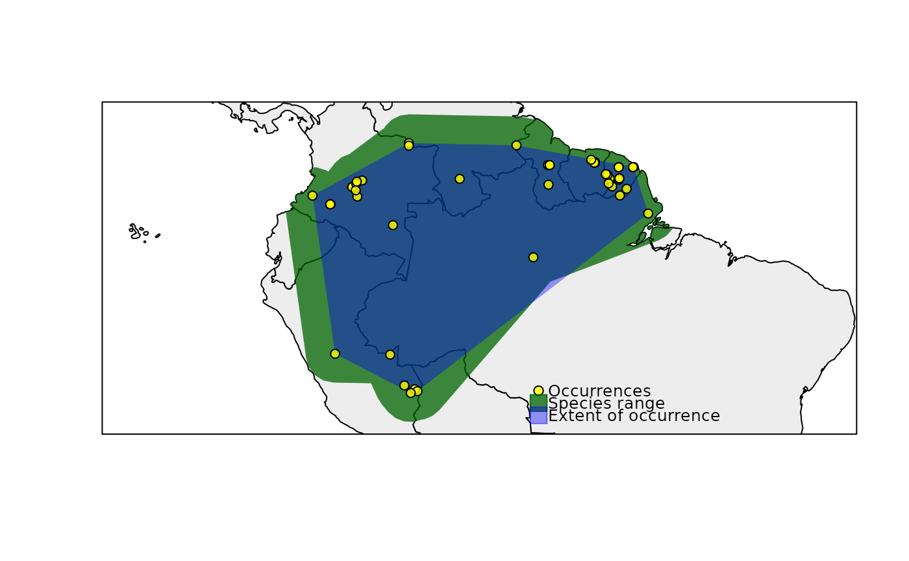

rangemap_plot generates customizable figures of species range maps using objects produced by other functions of this package.
rangemap_plot(sp_range, polygons, add_EOO = FALSE, add_occurrences = FALSE, basemap_color = "gray93", range_color = "darkgreen", extent_color = "blue", occurrences_color = "yellow", grid = FALSE, grid_sides = "bottomleft", ylabels_position = 1.3, legend = FALSE, legend_position = "bottomright", northarrow = FALSE, northarrow_position = "topright", scalebar = FALSE, scalebar_position = "bottomleft", scalebar_length = 100, zoom = 1)
| sp_range | a sp_range object produced with any of the following functions:
|
|---|---|
| polygons | (optional) a SpatialPolygons* object to be used as base for
the map. If |
| add_EOO | (logical) if |
| add_occurrences | (logical) if |
| basemap_color | color for the basemap ( |
| range_color | color for the species |
| extent_color | color for the species extent of occurrence to be plotted. Default = "blue". |
| occurrences_color | color for the species |
| grid | (logical) if |
| grid_sides | (character) sides in which the labels will be placed in the figure. Options are the same than for other position character indicators (see details). Default = "bottomleft". |
| ylabels_position | (numeric) if |
| legend | (logical) if |
| legend_position | (numeric or character) site in the figure where the legend will be placed. If numeric, vector of length two indicating x and y coordinates to be used to position the legend. See details for options of character indicators of position. Default = "bottomright". |
| northarrow | (logical) if |
| northarrow_position | (numeric or character) site in the figure where the north legend will be placed. If numeric, vector of length two indicating x and y coordinates to be used to position the north arrow. See details for options of character indicators of position. Default = "topright". |
| scalebar | (logical) if |
| scalebar_position | (numeric or character) site in the figure where the scale bar will be placed. If numeric, vector of length two indicating x and y coordinates to be used to position the scale bar. See details for options of character indicators of position. Default = "bottomleft". |
| scalebar_length | (numeric) length of the scale bar in km. Using entire numbers divisible for two is recommended. Default = 100. |
| zoom | (numeric) zoom factor when plotting the species range in a map. Default = 1. Larger values will zoom in into the species range and smaller values will zoom out. A value of 0.5 will duplicate the area that the biggest range is covering. |
A plot of the species range in a geographic context, with some map components defined by the user.
Position of distinct elements depend on the spatial configuration of the species range. Therefore, their position may need to be changed if the elements are needed. Position options are: "bottomright", "bottomleft", "topleft", and "topright". Numerical descriptions of positions are also allowed.
# example data data("cvehull_range", package = "rangemap") # arguments for the species range figure extent <- TRUE occ <- TRUE legend <- TRUE # creating the species range figure rangemap_plot(cvehull_range, add_EOO = extent, add_occurrences = occ, legend = legend)#> Warning: NULL source CRS comment, falling back to PROJ string#> Warning: NULL target CRS comment, falling back to PROJ string#> Warning: +init dropped in PROJ string#> Warning: CRS object has no comment#> Warning: CRS object has no comment